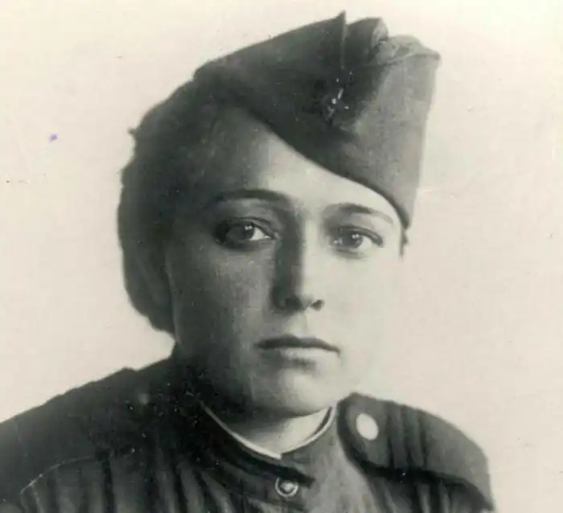
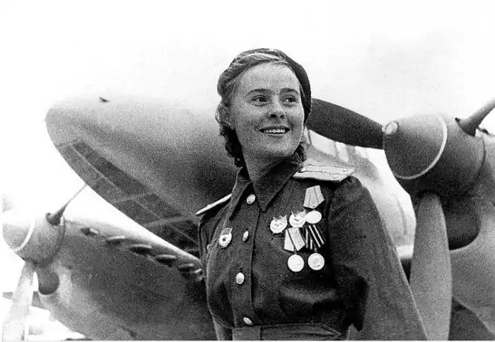
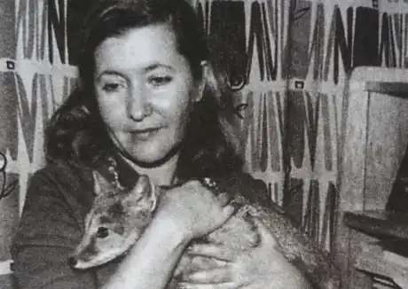

Юлія Володимирівна Друніна (1924-1991) — російська радянська поетеса, прозаїк.
Народилася в Москві в учительській родині. Батько — вчитель історії, мати — шкільний бібліотекар. Дитинство Юлії пройшло в центрі Москви, навчалася в московській школі № 131, де працював батько. Любила читати і не сумнівалася, що буде літератором. В 11 років почала писати вірші. В кінці 1930-х років брала участь у конкурсі на кращий вірш. В результаті, вірш "Ми разом за шкільною партою сиділи..." було надруковано в "Учительській газеті" і передано по радіо.
Коли почалася Вітчизняна війна, сімнадцятирічна Юлія Друніна разом з родиною була евакуйована в Заводоуковськ, де записалася в добровільну санітарну дружину при РОКК (Районне товариство Червоного Хреста) і стала працювати санітаркою в очному госпіталі. Брала участь у будівництві оборонних споруд під Можайськом, потім стала санітаркою піхотного полку. Воювала, була поранена. Після поранення був курсантом Школи молодших авіаспеціалістів (ШМАСУ). Через деякий час дівчатам — молодшим авиаспециалистам оголосили, що їх замість відправки у військові частини переводять в жіночий запасний полк. Перспектива опинитися далеко від фронту здавалася для Друніної жахливою. Дізнавшись про те, що дівчат-медиків, в порядку винятку, все-таки направлять в діючу армію, вона спішно знайшла своє свідоцтво про закінчення курсів медсестер і вже через кілька днів отримала направлення в санітарне управління 2-го Білоруського фронту. Після прибуття на фронт Юлія Друніна отримала призначення в 667-й стрілецький полк 218-ї стрілецької дивізії. У цьому ж полку воювала санінструктор Зінаїда Самсонова (загинула 27 січня 1944 року, посмертно удостоєна звання Героя Радянського Союзу), якою Друніна присвятила одне з найбільш проникливих своїх віршів "Зінько". В 1943 році Друніна була важко поранена — осколок снаряда увійшов в шию зліва і застряг всього в парі міліметрів від сонної артерії. Не підозрюючи про серйозність поранення, вона просто замотала шию бинтами і продовжувала працювати — рятувати інших. Приховувала, поки не стало зовсім погано. Прокинулася вже в шпиталі і там дізналася, що була на волосок від смерті. Досвід війни ліг в основу її творчості. У 20-річному віці Юлія Друніна, приїхавши до Москви, вийшла заміж за свого однолітка, також починаючого поета Миколи Старшинова, і почала відвідувати лекції в Літературному інституті, не здавши вступних іспитів. Ніхто не посмів відмовити інваліду війни. На початку 1945 року в журналі "Знамя" була надрукована добірка віршів Юлії Друніної, у 1948 році — збірка віршів "В солдатській шинелі". У березні 1947 року Друніна взяла участь у 1-му Всесоюзному нараді молодих письменників, була прийнята до спілки письменників, що підтримало її матеріально і дало можливість продовжувати свою творчу діяльність. Інститут Юлія Друніна закінчила тільки в 1952 році, пропустивши кілька років через народження доньки. Віршів у той період не писала. Юлія ДрунінаОсновна тема віршів Юлії Друніної — фронтова юність з усім її негараздами ("ознобные могили-бліндажі", "окопна туга" тощо) і гарячим патріотизмом, палкістю першої любові і безповоротними втратами, самовідданістю дружби і силою співчуття. У 1955 Друніна випускає збірку поезій "Розмова з серцем", далі йдуть збірки: "Сучасники" (1960), "Тривога" (1965), "Країна Юність" (1966), "Ти повернешся" (1968), "У двох вимірах" (1970), "Не буває кохання нещасливого..." (1973), "Окопна зірка" (1975), "Світ під оливами" (1978) та ін В 1970-ті роки виходять збірки: "У двох вимірах", "Я родом не з дитинства", "Окопна зірка", "Не буває кохання нещасливого" та інші. У 1980 році — "Бабине літо", в 1983 році — "Сонце — на літо". Серед небагатьох прозових творів Друніної — повість "Аліска" (1973), автобіографічний нарис "З тих вершин" (1979), публіцистика. На вірші Юлії Друніної Олександра Пахмутова написала пісні "Похідна кавалерійська" і "Ти — поруч". 1954 року Юлія Друніна надійшла на сценарні курси при Спілці кінематографістів. Тут вона познайомилася з відомим кіносценаристом Олексієм Яковичем Каплером. Любов спалахнула одразу, але ще шість років Юлія боролася з цим почуттям, зберігаючи вірність чоловікові, намагаючись зберегти сім'ю. У 1960 році Друніна все-таки розлучилася з Миколою Старшиновым і, забравши з собою доньку, пішла до Каплера, який також розлучився. Подружжя Каплера і Друніної, яка тривала 19 років, було дуже щасливим. Юлія присвятила чоловікові, своєї любові до нього, величезна кількість віршів — хоча і менше, ніж про війну, але більше, ніж про що б то не було іншому. Смерть Каплера в 1979 році так і залишилася для Друніної непоправною втратою. У 1990 Юлія Друніна балотувалася і була обрана до верховної Ради СРСР, до цього її спонукало бажання захистити інтереси і права учасників Великої Вітчизняної війни та війни в Афганістані. Розчарувавшись у корисності цієї діяльності і зрозумівши, що зробити нічого суттєвого не зможе, вийшла з депутатського корпусу. 20 листопада 1991 року Юлія Друніна трагічно пішла з життя, покінчивши з собою. У своєму гаражі вона завела машину і задихнулася. Вона могла тисячу разів загинути на війні, а пішла з життя з власної волі. Причиною самогубства, судячи з усього, послужили особисті втрати (смерть другого з подружжя, відомого кінорежисера А. Каплера) і крах суспільних ідеалів. В одному з листів, написаних перед відходом з життя, Друніна так описувала свої переживання: "...Чому йду? По-моєму, залишатися в цьому жахливому, передравшемся, створеному для ділків з залізними ліктями світі такого недосконалого суті, як я, можна, лише маючи міцний особистий тил..." Йду, немає сил. Лише здалеку (Все ж хрещена!) помолюся За таких ось, як ви, — за обраних Утримати над урвищем Русь. Але боюся, що і ви безсилі. Тому вибираю смерть. Як летить під укіс Росія, Не можу, не хочу дивитися!